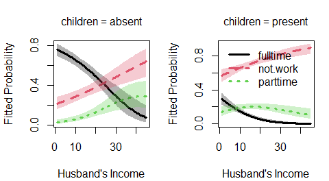

The nestedLogit package provides functions for fitting nested dichotomy logistic regression models for a polytomous response. Nested dichotomies are statistically independent, and hence provide an additive decomposition of tests for the overall polytomous response. When the dichotomies make sense substantively, this method can be a simpler alternative to the standard multinomial logistic model which compares response categories to a reference level.
Installation
This package has not yet been submitted to CRAN. This development version can be installed to your R library directly from the GitHub repo via:
if (!require(remotes)) install.packages("remotes")
remotes::install_github("friendly/nestedLogit", build_vignettes = TRUE)Package overview
The package provides one main function, nestedLogit() for fitting the set of (m−1) binary logistic regression models for a polytomous response with m levels. These can be specified using helper functions,
-
dichotomy(): constructs a single dichotomy among the levels of a response factor; -
logits(): creates the set of dichotomies, typically usingdichotomy()for each. -
continuationLogits(): provides a convenient way to generate all dichotomies for an ordered response.
For instance, a 4-category response, with levels A, B, C, D, and successive binary splits for the dichotomies of interest could be specified as:
(ABCD <-
logits(AB.CD = dichotomy(c("A", "B"), c("C", "D")),
A.B = dichotomy("A", "B"),
C.D = dichotomy("C", "D")
)
)
#> AB.CD: {A, B} vs. {C, D}
#> A.B: {A} vs. {B}
#> C.D: {C} vs. {D}Alternatively, the nested dichotomies can be specified more compactly as a nested (i.e., recursive) list with optionally named elements. For example, where people might choose a method of transportation among the categories plane, train, bus, car, a sensible set of three dichotomies could be specified as:
list(
air = "plane",
ground = list(
public = list("train", "bus"),
private = "car"
))There are also methods including as.matrix.dichotomies(), as.character.dichotomies() to facilitate working with dichotomies objects in other representations. The ABCD example above corresponds to the matrix below, whose rows represent the dichotomies and columns are the response levels:
as.matrix(ABCD)
#> A B C D
#> AB.CD 0 0 1 1
#> A.B 0 1 NA NA
#> C.D NA NA 0 1The result of nestedLogit() is an object of class "nestedLogit". It contains the set of (m−1) glm() models fit to the dichotomies.
Methods
As befits a model-fitting function, the package defines a nearly complete set of methods for "nestedLogit" objects:
-
print()andsummary()print the results for each of the submodels. -
update()re-fits the model, allowing changes to the modelformula,data,subset, andcontrastsarguments. -
coef()returns the coefficients for the predictors in each dichotomy. -
vcov()returns the variance-covariance matrix of the coefficients -
predict()computes predicted probabilities for the response categories, either for the cases in the data, which is equivalent tofitted(), or for arbitrary combinations of the predictors; the latter is useful for producing plots to aid interpretation. -
glance()andtidy()are extensions ofbroom::glance.glm()andbroom::tidy.glm()to obtain compact summaries of a"nestedLogit"model object. -
plot()provides basic plots of the predicted probabilities over a range of values of the predictor variables. -
models()is an extractor function for the binary logit models in the"nestedLogit"object
These functions are supplemented by various methods for testing hypotheses about and comparing nested-logit models:
-
anova()provides analysis-of-deviance Type I (sequential) tests for each dichotomy and for the combined model. When given a sequence of model objects,anova()tests the models against one another in the order specified. -
Anova()usescar::Anova()to provide analysis-of-deviance Type II or III (partial) tests for each dichotomy and for the combined model. -
linearHypothesis()computes Wald tests for hypotheses about coefficients or their linear combinations. -
logLik()returns the log-likelihood and degrees of freedom for the nested-dichotomies logit model. - Through
logLik(), theAIC()andBIC()functions compute the Akaike and Bayesian information criteria model-comparison statistics.
Examples
This example uses data on women’s labor force participation to fit a nested logit model for the response, partic, representing categories not.work, parttime and fulltime for 263 women from a 1977 survey in Canada. This dataset is explored in more detail in the package vignette, vignette("nestedLogits", package = "nestedLogit").
A model for the complete polytomy can be specified as two nested dichotomies, using helper functions dichotomy() and logits(), as shown in the example that follows:
-
work: {not.work} vs. {parttime, fulltime} -
full: {parttime} vs. {fulltime}, but only for those working
nestedLogit() effectively fits each of these dichotomies as logistic regression models via glm(..., family = binomial)
data(Womenlf, package = "carData")
# Use `logits()` and `dichotomy()` to specify the comparisons of interest
comparisons <- logits(work=dichotomy("not.work",
working=c("parttime", "fulltime")),
full=dichotomy("parttime", "fulltime"))
m <- nestedLogit(partic ~ hincome + children,
dichotomies = comparisons,
data=Womenlf)
coef(m)
#> work full
#> (Intercept) 1.33582979 3.4777735
#> hincome -0.04230843 -0.1072679
#> childrenpresent -1.57564843 -2.6514557What the "nestedLogit" object contains:
names(m)
#> [1] "models" "formula" "dichotomies" "data"
#> [5] "data.name" "subset" "contrasts" "contrasts.print"The separate models for the work and full dichotomies can be extracted via models():
Anova() produces analysis of variance deviance tests for the terms in this model for each of the submodels, as well as for the combined responses of the polytomy. The LR Chisq and df for terms in the combined model are the sums of those for the submodels.
car::Anova(m)
#>
#> Analysis of Deviance Tables (Type II tests)
#>
#> Response work: {not.work} vs. working{parttime, fulltime}
#> LR Chisq Df Pr(>Chisq)
#> hincome 4.8264 1 0.02803 *
#> children 31.3229 1 2.185e-08 ***
#> ---
#> Signif. codes: 0 '***' 0.001 '**' 0.01 '*' 0.05 '.' 0.1 ' ' 1
#>
#>
#> Response full: {parttime} vs. {fulltime}
#> LR Chisq Df Pr(>Chisq)
#> hincome 8.981 1 0.002728 **
#> children 32.136 1 1.437e-08 ***
#> ---
#> Signif. codes: 0 '***' 0.001 '**' 0.01 '*' 0.05 '.' 0.1 ' ' 1
#>
#>
#> Combined Responses
#> LR Chisq Df Pr(>Chisq)
#> hincome 13.808 2 0.001004 **
#> children 63.459 2 1.66e-14 ***
#> ---
#> Signif. codes: 0 '***' 0.001 '**' 0.01 '*' 0.05 '.' 0.1 ' ' 1Plots
A basic plot of predicted probabilities can be produced using the plot() method for "nestedLogit" objects.
op <- par(mfcol=c(1, 2), mar=c(4, 4, 3, 1) + 0.1)
plot(m, "hincome", list(children="absent"),
xlab="Husband's Income", legend=FALSE)
plot(m, "hincome", list(children="present"),
xlab="Husband's Income")
A variety of other plots can be produced using base graphics (matplot()) and ggplot(), as described in the vignette, vignette("plotting", package="nestedLogit").
References
S. Fienberg (1980) The Analysis of Cross-Classified Categorical Data, 2nd Edition, MIT Press, Section 6.6.
J. Fox (2016) Applied Regression Analysis and Generalized Linear Models, 3rd Edition, Sage, Section 14.2.2.
M. Friendly and D. Meyers (2016) Discrete Data Analysis with R, CRC Press, Section 8.2.